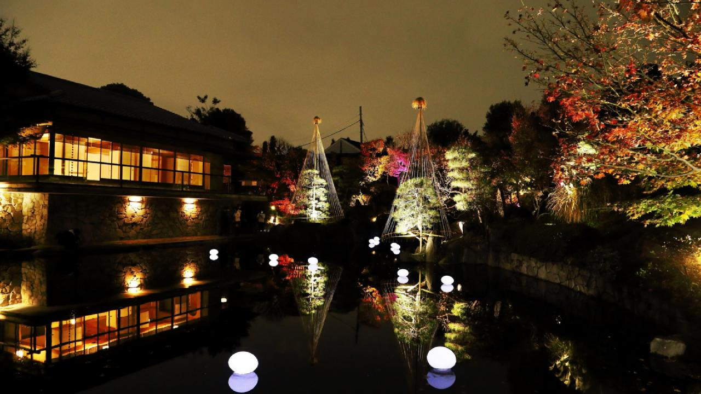
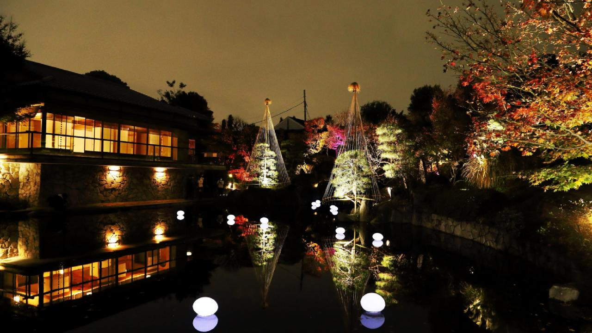

MEJIRO GARDEN
Mejiro Garden, a hidden gem in Tokyo, offers serene beauty with its traditional Japanese landscape.
The garden features a picturesque pond, charming bridges, and seasonal flora.
It's an ideal spot for peaceful walks and contemplation.
The tea house within the garden provides a tranquil place to experience traditional tea ceremonies.
Mejiro Garden is a perfect retreat from the bustling city life.


 
